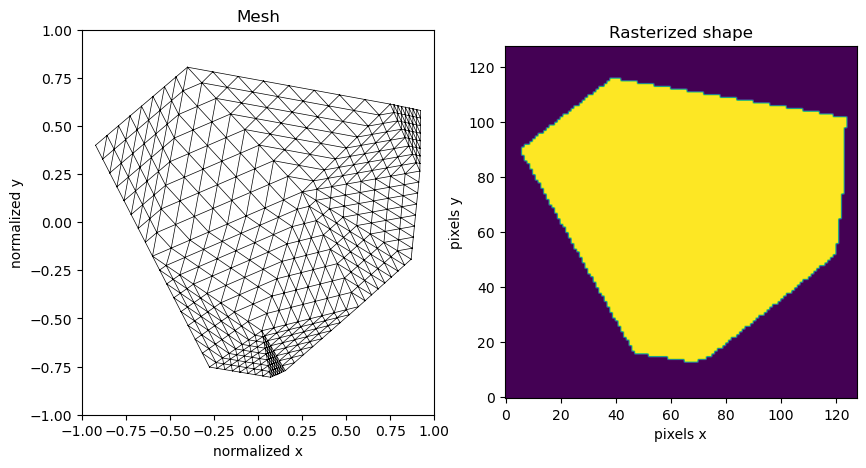

def rasterize(
side: int, # side of the image
points: np.ndarray, # points defining the shape
) -> np.ndarray: # rasterized shape as a boolean array
"""
Rasterize a shape defined by a set of points
"""
return polygon2mask((side, side), ((points + 1.0) / 2.0) * side).TShape
Shape generation and utilities
generate_convex_mesh
generate_convex_mesh (n_points:int=10, n_refinement_steps:int=3)
Generate a 2D convex mesh
| Type | Default | Details | |
|---|---|---|---|
| n_points | int | 10 | number of points in the convex shape |
| n_refinement_steps | int | 3 | number of refinement steps |
| Returns | tuple | mesh and points in the normalized range [-1.0, 1.0] |
generate_convex_shape
generate_convex_shape (n:int)
This function was taken and adapted from https://stackoverflow.com/a/68602707
Generate convex shappes according to Pavel Valtr’s 1995 alogrithm. Ported from Sander Verdonschot’s Java version, found here: https://cglab.ca/~sander/misc/ConvexGeneration/ValtrAlgorithm.java
returns a numpy array of shape (n, 2)
Generate random convex polygons and rasterize them.
mesh, points = generate_convex_mesh(10, 3)
system = System(MATERIALS['polycarbonate'], mesh)
eigenvalues = system.eigenvalues
eigenvectors = system.get_mode_gains()
fig, ax = plt.subplots(1, 2, figsize=(10, 5))
MeshTri.draw(mesh, shading={"wireframe": True}, ax=ax[0])
ax[0].set_xlim(-1, 1)
ax[0].set_ylim(-1, 1)
ax[0].set_title("Mesh")
ax[0].set_xlabel("normalized x")
ax[0].set_ylabel("normalized y")
mask = rasterize(128, points)
ax[1].imshow(mask, origin="lower")
ax[1].set_title("Rasterized shape")
ax[1].set_xlabel("pixels x")
ax[1].set_ylabel("pixels y")Text(0, 0.5, 'pixels y')